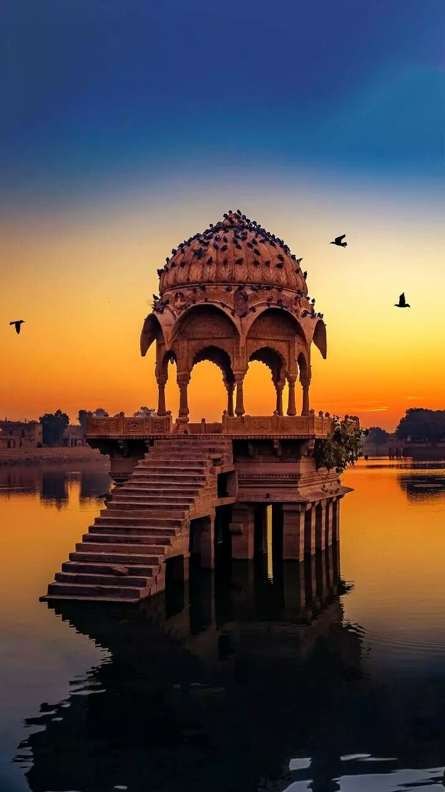
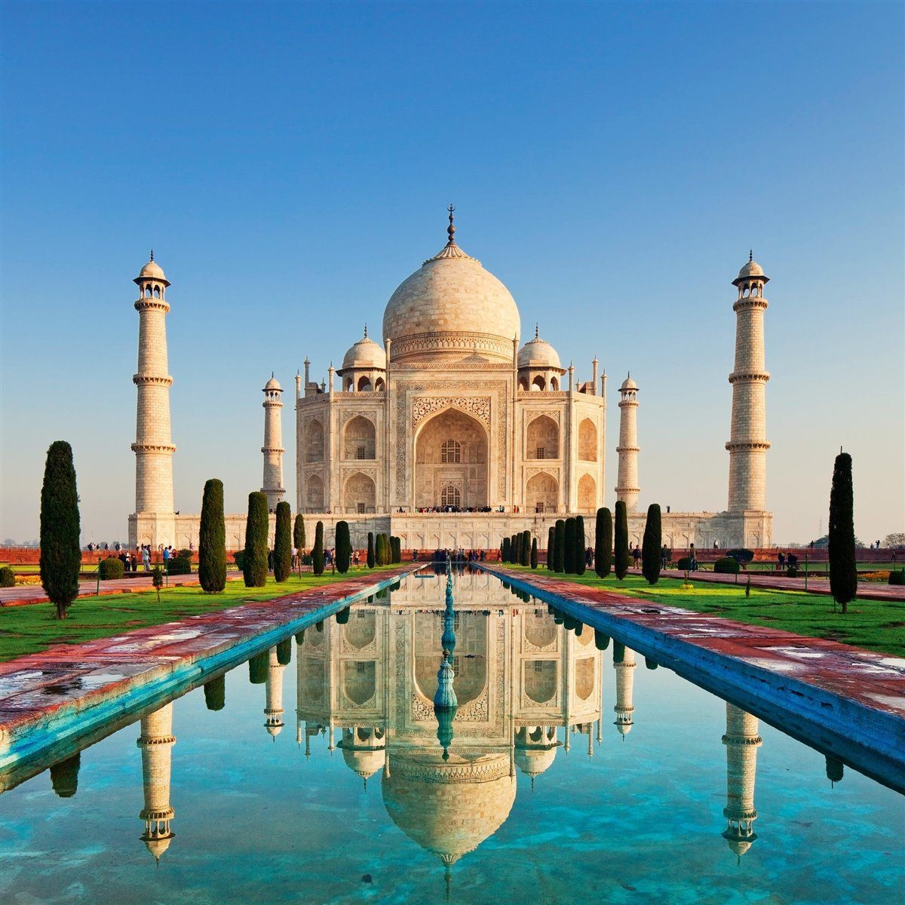
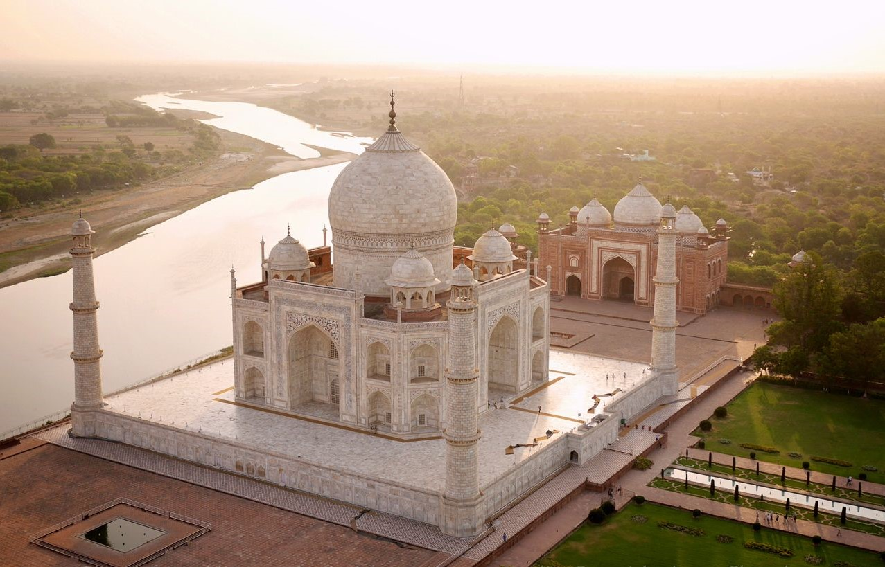
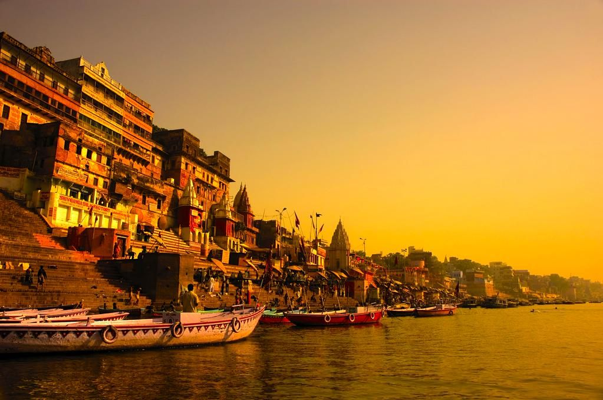
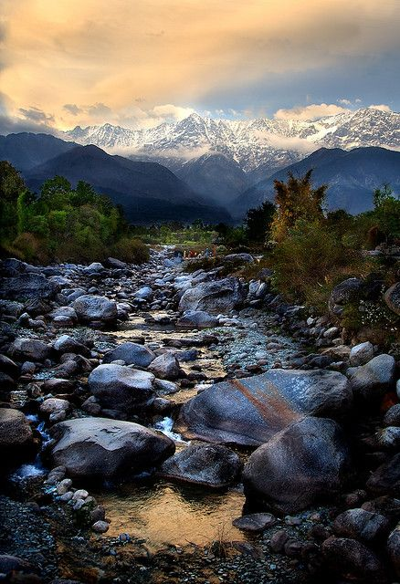
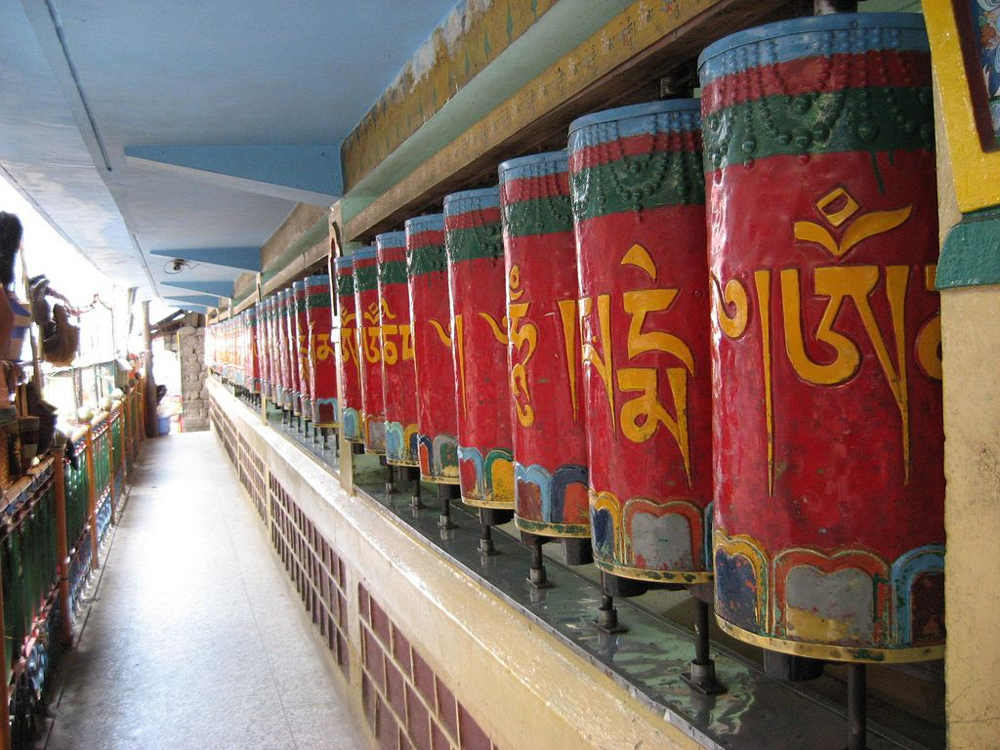
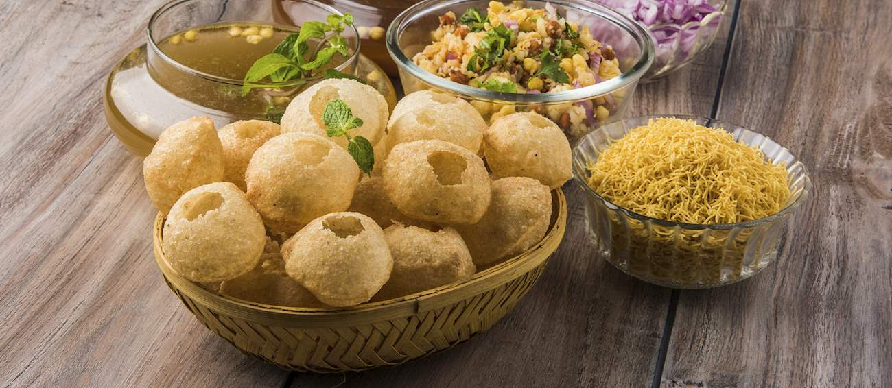
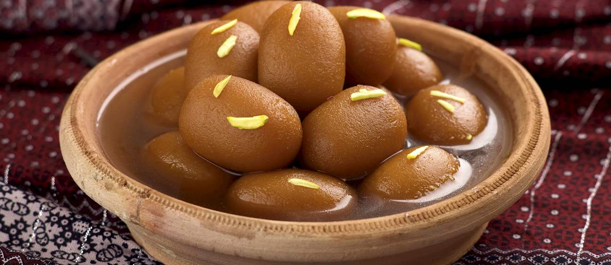
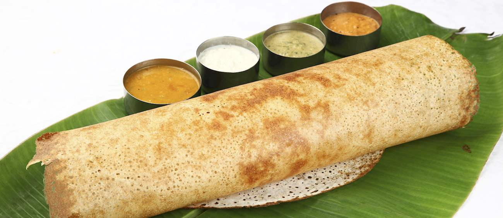

India's landscapes are as fantastically varied as its cultural traditions. From the snow-dusted peaks of the Himalaya to the sun-splashed beaches of the tropical south, the country has a bounty of outdoor attractions. You can scout for big jungle cats on scenic wildlife safaris, paddle in the shimmering waters of coastal retreats, take blood-pumping treks high in the mountains, or simply inhale pine-scented air on meditative forest walks. Among all these natural treasures is a wealth of architectural gems, from serene temples rising out of pancake-flat plains to crumbling forts peering over plunging ravines.
Indian cuisine is a scrumptious smorgasbord of regionally distinct recipes, each with their own traditional preparation techniques and presentation styles - from the competing flavours of masterfully marinated meats and thalis (plate meals) to the simple splendour of vegetarian curries and deep-sea delights. Spices lie at the heart of Indian cooking, with the crackle of cumin seeds in hot oil a familiar sound in most kitchens. The country is also renowned for its tempting array of street food, with vendors selling everything from spicy samosas and kebabs to cooling kulfi (ice cream) and lassi (yoghurt drink).
Places to Go
Jaisalmer
In the remote westernmost corner of Rajasthan, Jaisalmer is the quintessential desert town, its golden, sand-coloured ramparts rising out of the arid Thar like a scene from the Arabian Nights. Rampant commercialism may have dampened the romantic vision somewhat, but even with all the touts and tour buses, the town deservedly remains one of India's most popular destinations. Villagers dressed in voluminous red and orange turbans still outnumber foreigners in the bazaar, while the exquisite sandstone architecture of the "Golden City" is quite unlike anything else in India. The streets of Jaisalmer are flanked with numerous pale honey-coloured facades, covered with latticework and floral designs, but the city's real showpieces are its havelis, commissioned by wealthy merchants during the eighteenth and nineteenth centuries.
Taj Mahal
The site recognised world-over, the Taj Mahal is one of the world’s greatest buildings and the ultimate symbol of love. Emperor Shah Jahan was the mind behind the grand design in order to enshrine his favourite wife, Arjumand Bann Begum, also known as Mumtaz Mahul, "Chosen One of the Palace". The best time to see the Taj Mahal is in the early morning with relatively few crowds while the palace is drenched in a soft red glow.
The magic of the monument is strangely undiminished by the crowds of tourists who visit, as small and insignificant as ants in the face of the immense mausoleum. That said, the Taj is at its most alluring in the relative quiet of early morning, shrouded in mist and bathed with a soft red glow. As its vast marble surfaces fall into shadow or reflect the sun, its colour changes from soft grey and yellow to pearly cream and dazzling white. This play of light is an important decorative device, symbolically implying the presence of Allah, who is never represented in physical form. To really appreciate it fully however, you'd have to stick around from dawn until dusk.
At the far end of the charbagh, steps lead up to the high-square marble platform on which the mausoleum itself sits, each corner marked by a tall, tapering minaret. To the west of the tomb is a domed red-sandstone mosque and to the east a replica jawab, put there to complete the architectural symmetry of the complex - it cannot be used as a mosque as it faces away from Mecca.
Varanasi
Varanasi is known as the City of Light and is one of the oldest living cities in the world. Its history is steeped in Hinduism and it remains a place of holy significance - in its location alongside the Ganges river, thousands of pilgrims and residents come for their daily ablutions to the large stone ghats.
The great Hindu city of Varanasi, also known as Banaras or Benares, stretches along the River Ganges, its waterfront dominated by long flights of stone ghats where thousands of pilgrims and residents come for their daily ritual ablutions. Known to the devout as Kashi, the Luminous - the City of Light, founded by Shiva - Varanasi is one of the oldest living cities in the world. It has maintained its religious life since the sixth century BC in one continuous tradition, in part by remaining outside the mainstream of political activity and historical development of the Subcontinent, and stands at the centre of the Hindu universe, the focus of a religious geography that reaches from the Himalayan cave of Amarnath in Kashmir to India's southern tip at Kanyakumari, Puri to the east, and Dwarka to the west. Located next to a ford on an ancient trade route, Varanasi is among the holiest of all tirthas - "crossing places", that allow the devotee access to the divine and enable gods and goddesses to come down to earth. It has attracted pilgrims, seekers, sannyasins and students of the Vedas throughout its history, including sages such as Buddha, Mahavira (founder of the Jain faith) and the great Hindu reformer Shankara.
Dharamsala
Dharamsala is famous for being the home of the Dalai Lama and Tibetan government in exile. It's also a great jumping off point for exhilarating hikes around the Himalayas. Actually two separate towns, Dharamsala and McLeod Ganj, the latter has had an influx of Tibetan refugees, resulting in many temples, monasteries, meditation centres and more.
Ruffled by the lower ridges of the Shivalik Range in the far south, cut through by the Pir Panjal and Dhauladhar ranges in the northwest, and dominated by the great Himalayas in the north and east, Himachal Pradesh (HP) is India's most popular and easily accessible hill state. Sandwiched between the Punjab and Tibet, its lowland orchards, subtropical forests and maize fields peter out in the higher reaches where pines cling to the steep slopes of mountains whose inhospitable peaks soar in rocky crags and forbidding ice fields to heights of more than 6000m.

Despite heavy snows and low temperatures between December and March, McLeod Ganj receives visitors throughout the year. Summer brings torrential rains – this being the second wettest place in India - that return in bursts for much of the year. Daytime temperatures can be high, but you'll need warm clothes for the chilly nights.
Famous Food
Pani Puri
Panipuri is a street snack that is extremely popular in India, Bangladesh, Pakistan, and Nepal.
Small in size, it consists of a hollow puri that is fried until crispy, then stuffed with a combination of flavored water
called pani, tamarind chutney, chaat masala, potatoes, onions, hot chillis, and chickpeas.
In North India, panipuri is known as golgappa, gol referring to the crispy shell, and gappa referring to the eating process,
since these small snacks are typically eaten one at a time. It is believed that panipuri originated in Uttar Pradesh and gradually
spread in popularity throughout the country and outside of it.
Gulab Jamun
Gulab jamun is a dessert based on milk solids that are kneaded into a dough, shaped into balls,
and deep-fried in ghee. The balls then get soaked in a sugary concoction flavored with saffron, green cardamom, and rose
water. When served, gulab jamun is often garnished with dried nuts to further enhance its flavors.
The name of the dish is derived from two words: gulab, meaning rose, and jamun, referring to the purple-colored jamun berry
fruit. It is believed that the dessert originated from an Arabic dessert called luqmat al-qadi, which became popular during
the Mughal era, when Indian cooks at the palace kitchens adapted their cuisine by combining the newly arrived Persian
ingredients with their own Hindu flavors.
Nowadays, gulab jamun is often prepared for weddings and during the Diwali festival, both in India and in Trinidad and
Tobago, where gulab jamun is also quite popular.
Masala Dosa
A traditional southern Indian dish known as masala dosa is popular throughout the country, made
from a batter of soaked rice and lentils that is baked into a thin pancake and usually stuffed with potatoes, onions, and
mustard seeds. The dish is often garnished with grated coconut and chopped coriander.
With its huge popularity, there are also some variations of the dish, such as mysore masala dosa, rava masala dosa, onion
masala dosa, and paper masala dosa. It is usually consumed as a quick snack or as a part of any meal of the day.